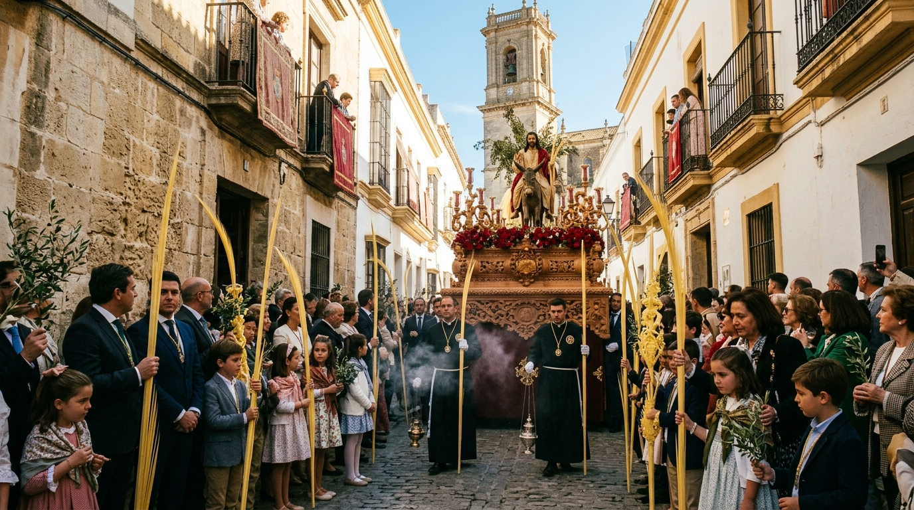
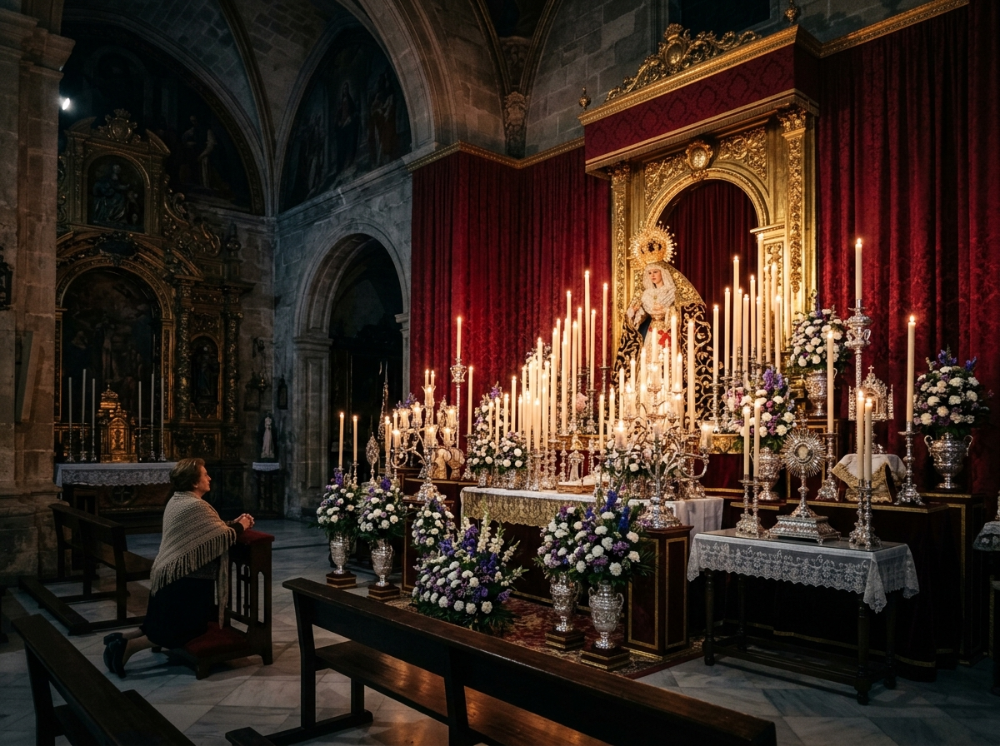
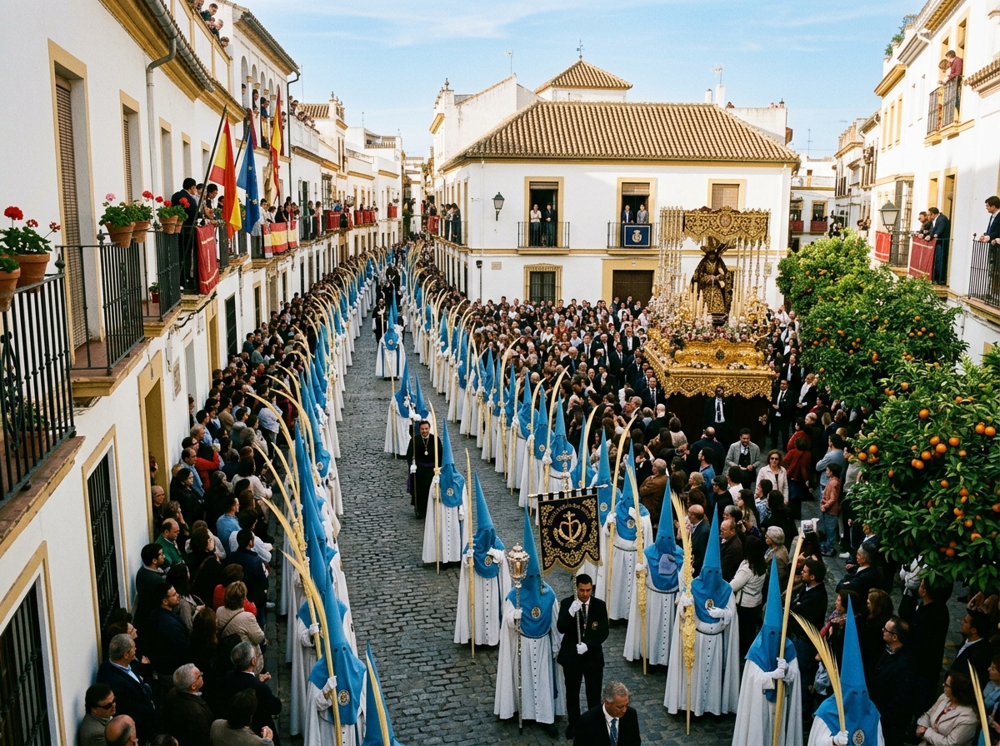

Cultos de Cuaresma de nuestra Hermandad
Convocatoria para el Solemne Triduo en honor a Nuestro Padre Jesús de los Reyes y la Función Principal de Instituto en la Parroquia de Santa Marina.

Hermandad y Cofradía de Nuestro Padre Jesús de los Reyes en su Entrada Triunfal en Jerusalén y María Santísima del Rosario
Únete a nuestra corporación, forma parte de nuestra historia y acompaña a nuestros Sagrados Titulares.
Solicitar ingresoMantente informado de todos los comunicados, preparativos de culto y vida diaria de la Hermandad.
Ver actualidadAccede a las Reglas de la Hermandad, convocatorias de Cabildo, papeletas de sitio e impresos oficiales.
Consultar archivos
Tradición Cofrade
Domingo de Ramos en Fernán Núñez
La Hermandad y Cofradía de Nuestro Padre Jesús de los Reyes en su Entrada Triunfal en Jerusalén y María Santísima del Rosario mantiene una trayectoria vinculada a la Semana Santa de Fernán Núñez y a la celebración del Domingo de Ramos.
Desde su fundación en el seno de la comunidad parroquial de Santa Marina de Aguas Santas, la corporación ha congregado a generaciones de cofrades, con especial arraigo en la juventud y en la alegría de los niños que portan palmas y ramas de olivo en la mañana más luminosa del año.
Con el paso de los años, el cuidado de su patrimonio artístico, la consolidación de sus cultos solemnes y el compromiso con la caridad han marcado el rumbo fraterno de nuestra hermandad.

Convocatoria para el Solemne Triduo en honor a Nuestro Padre Jesús de los Reyes y la Función Principal de Instituto en la Parroquia de Santa Marina.

El equipo de priostía y mayordomía intensifica los trabajos de montaje de los pasos procesionales y adecuación de enseres litúrgicos.

Descubierta la obra pictórica que ilustra la salida procesional de La Borriquita en este año jubilar, obra de reconocidos artistas cofrades.
Eje espiritual, artístico y devocional de la Hermandad, centro de las plegarias y el fervor cofrade de Fernán Núñez cada Domingo de Ramos.

En su Entrada Triunfal en Jerusalén
Representa a Cristo aclamado con palmas y ramas de olivo a su entrada en la Ciudad Santa, proclamado Rey con dulzura, majestad y benevolencia pastoral.

Madre de Dios y Esperanza Nuestra
Dolorosa de mirada compasiva que procesiona bajo palio de terciopelo y orfebrería, portando el Santo Rosario en sus manos como faro de oración perpetua.




Convocatorias solemnes, cultos de reglas, triduos, veneración y actos fraternos que vertebran el año litúrgico de nuestra cofradía.
Ejercicio del Triduo y Santa Misa con predicación de la Palabra, ofrecido por las intenciones de las familias de la hermandad y la juventud cofrade.
Mayor solemnidad de nuestras reglas con pública protestación de Fe católica y posterior imposición de medallas a los nuevos hermanos recibidos.
Jornada íntima de oración personal ante el Señor de los Reyes y María Santísima del Rosario, con vigilia nocturna y rezo del Santo Rosario meditado.
Meditación comunitaria de las catorce estaciones por las calles aledañas al templo parroquial, en recogimiento, silencio y penitencia.
Tradicional bendición de palmas y ramos de olivo previa a la salida de la Estación de Penitencia en la mañana radiante del Domingo de Ramos.
Cultos anuales en honor de la Santísima Virgen con motivo de su festividad litúrgica, devoto besamanos y solemne Eucaristía de acción de gracias.
La Borriquita de Fernán Núñez
"Ser hermano es formar parte de una historia, una tradición y una familia que camina unida detrás de nuestros Sagrados Titulares."
La fe se hace testimonio vivo a través del servicio a los más desfavorecidos. La Hermandad mantiene un compromiso continuo de ayuda, cercanía y solidaridad en Fernán Núñez.
Bolsa Asistencial permanente destinada a atender necesidades urgentes de familias del municipio y cubrir situaciones de especial vulnerabilidad económica.
Colaboración activa y periódica con Cáritas Parroquial de Santa Marina, campañas de recogida de alimentos no perecederos y juguetes en Navidad.
Grupo Joven y cuerpo de voluntariado de hermanos implicados en visitas a ancianos, enfermos y acompañamiento a personas en soledad no deseada.